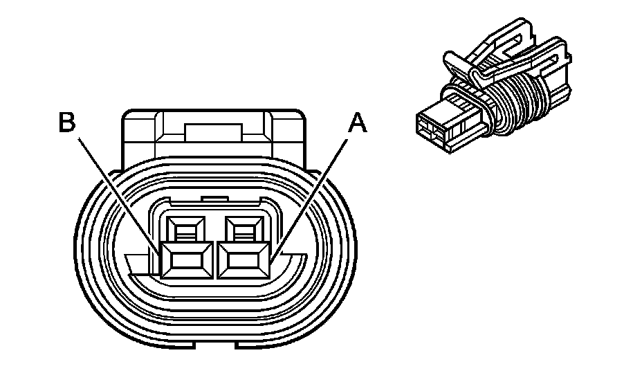
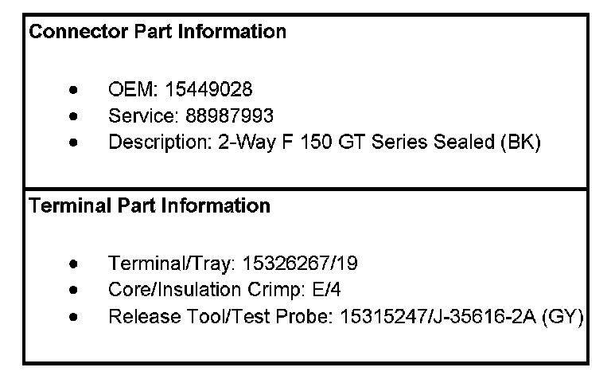
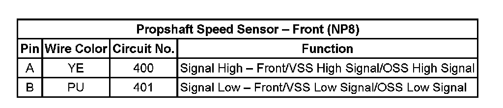
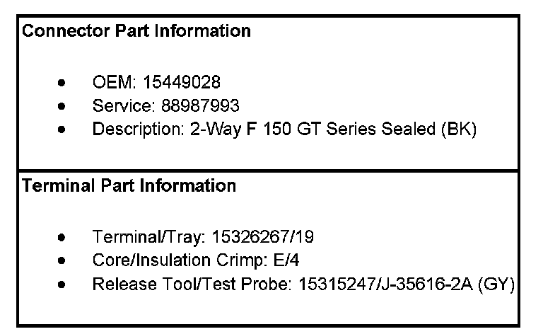
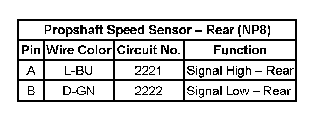

Operation CHARM
: Car repair manuals for everyone.
Home
>>
Cadillac
>>
2007
>>
Escalade ESV AWD V8-6.2L
>>
Repair and Diagnosis
>>
Diagrams
>>
Connector Views
>>
Drive/Propeller Shaft
Drive/Propeller Shaft
Transfer Case
Control Connector End Views
Propshaft
Speed Sensor
- Front (NP8)


Propshaft Speed Sensor - Front (NP8):

Propshaft
Speed Sensor
- Rear (NP8)

Propshaft Speed Sensor - Rear (NP8):
